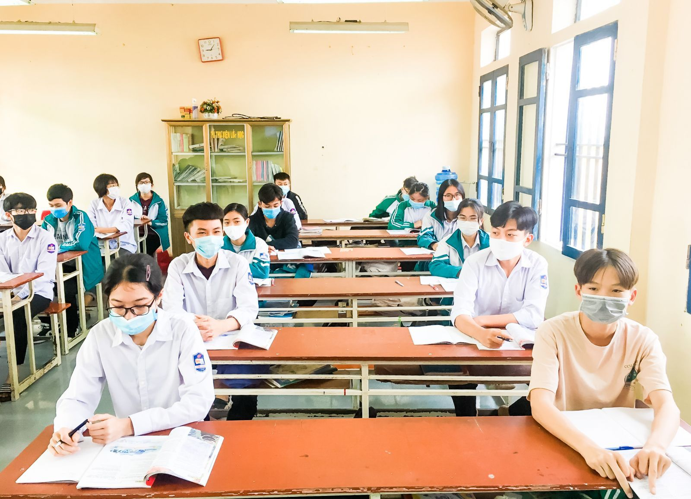
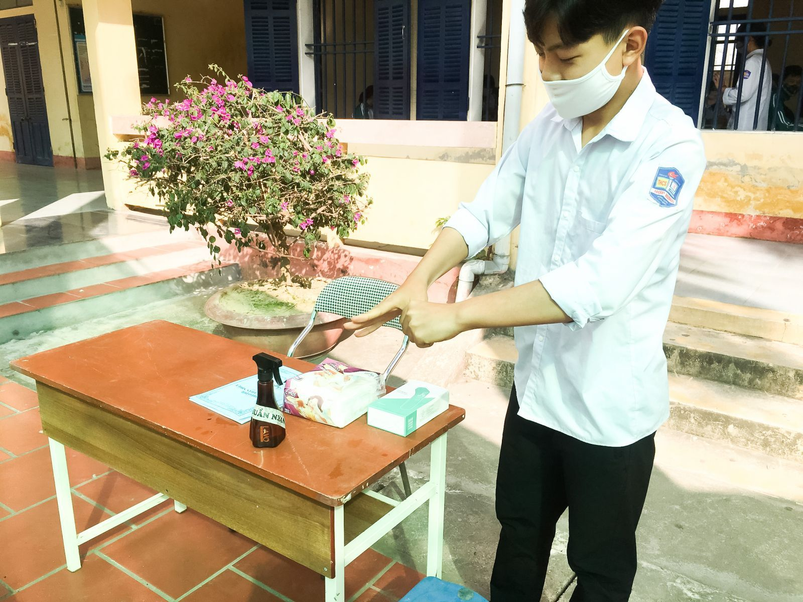
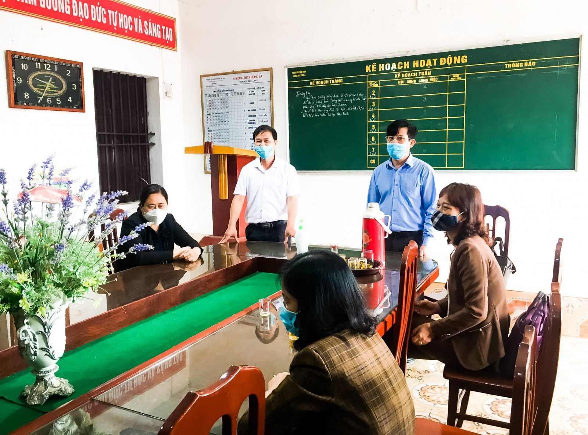

Thái Bình chủ động phòng chống dịch đón học sinh đi học trở lại
Sáng nay, ngày 22/2, học sinh lớp 9, lớp 12 và học sinh các đội dự tuyển học sinh giỏi quốc gia trên địa bàn tỉnh Thái Bình trở lại trường học. Công tác đảm bảo an toàn cho giáo viên, học sinh được ngành Giáo dục tỉnh đặt lên hàng đầu với một loạt các biện pháp chống dịch theo quy định.

Trường THCS Hợp Hưng (huyện Đông Hưng, tỉnh Thái Bình) thực hiện nghiêm công tác phòng, chống dịch Covid-19; yêu cầu học sinh đeo khẩu trang, rửa tay sát khuẩn, đo thân nhiệt trước khi vào học, thực hiện giãn cách trong lớp học
Xây dựng “kịch bản” trước khi đón học sinh trở lại
Những ngày qua, UBND tỉnh và Sở Giáo dục và Đào tạo tỉnh Thái Bình liên tiếp ban hành các công văn yêu cầu các đơn vị, trường học trên địa bàn tỉnh triển khai thực hiện nghiêm các biện pháp phòng, chống dịch Covid-19; đồng thời tổ chức tốt việc dạy học trực tuyến phù hợp với từng đối tượng học sinh. Về cơ bản, các nhà trường đều thực hiện tốt nhiệm vụ kép.
Căn cứ vào tình hình thực tế diễn biến dịch bệnh COVID-19 trên địa bàn tỉnh, UBND tỉnh Thái Bình giao Sở Giáo dục và Đào tạo chủ trì, phối hợp với UBND các huyện, thành phố; chỉ đạo, hướng dẫn các cơ sở giáo dục về việc bố trí chương trình và kế hoạch dạy học phù hợp với tình hình thực tế, bảo đảm công tác phòng, chống dịch Covid-19. Đồng thời chủ trì, phối hợp với Sở Y tế hướng dẫn các cơ sở giáo dục triển khai các biện pháp phòng, chống dịch bệnh theo đúng hướng dẫn của Bộ Y tế, Bộ Giáo dục và Đào tạo khi học sinh đi học trở lại.
Giám đốc Sở Giáo dục và Đào tạo tỉnh Thái Bình Nguyễn Viết Hiển cho biết: Sở Giáo dục và Đào tạo đã xây dựng các phương án vừa thực hiện tốt công tác phòng chống dịch bệnh, vừa bảo đảm kế hoạch, nhiệm vụ năm học. Khi học sinh đi học trở lại, Sở yêu cầu các trường học tổ chức dạy trực tiếp kết hợp dạy trực tuyến. Đối với việc học trực tiếp ở trường, lớp có sĩ số trên 35 học sinh sẽ chia đôi lớp học thành 2 ca sáng và chiều. Học sinh chỉ học ở trường 1 buổi/ngày, 6 buổi/tuần, mỗi buổi từ 3 đến 4 tiết. Các cơ sở giáo dục cần điều chỉnh kế hoạch dạy; chỉ đạo các tổ, nhóm chuyên môn rà soát kế hoạch của từng bộ môn, xây dựng kế hoạch cho từng tiết, từng tuần học; chú trọng các môn thi vào lớp 10 và thi tốt nghiệp THPT.
Sở Giáo dục và Đào tạo Thái Bình cũng chỉ đạo các cơ sở giáo dục tạm thời chưa bố trí các hoạt động như tập trung toàn khối, nhiều lớp ở cùng một thời điểm, các hoạt động ngoài giờ lên lớp và các hoạt động tập thể khác. Chưa tổ chức các tiết thực hành đối với các môn Giáo dục thể chất, Quốc phòng an ninh, Âm nhạc. Nghiêm cấm giáo viên tổ chức dạy thêm trực tiếp, trực tuyến trong và ngoài nhà trường.
Đặt mục tiêu an toàn cho học sinh lên hàng đầu
Theo ghi nhận tại ngày đầu tiên đón học sinh trở lại học tại Thái Bình, các biện pháp phòng, chống dịch được các đơn vị trường học trên địa bàn chủ động triển khai, mọi hoạt động đi vào nề nếp.

Học sinh Trường THCS Hợp Hưng (huyện Đông Hưng) rửa tay sát khuẩn trước khi vào lớp học
Từ 6h sáng ngày 22/2, đội ngũ cán bộ, giáo viên Trường THCS Hợp Hưng (huyện Đông Hưng) đã có mặt thực hiện các nhiệm vụ được Ban Giám hiệu, Ban Chỉ đạo phòng, chống dịch nhà trường phân công. Công tác hướng dẫn, tổ chức để đo thân nhiệt, sát khuẩn trước khi vào trường, lớp được thực hiện tốt. Trước khi bước vào lớp, học sinh đều đeo khẩu trang, xếp hàng rửa tay sát khuẩn và đo thân nhiệt... Cô giáo Phạm Quỳnh Hương - Hiệu trường nhà trường cho biết, nhà trường đang thực hiện song song việc giảng dạy trực tiếp đối với học sinh lớp 9 và dạy trực tuyến cho học sinh các khối lớp 6,7,8. Ban Giám hiệu Trường THCS Hợp Hưng đã xây dựng chương trình cụ thể để các em học sinh tuy không đến trường nhưng vẫn đảm bảo việc học tập của mình.

Ban Giám hiệu Trường THCS Đông La (huyện Đông Hưng) họp bàn các phương án thực hiện nhiệm vụ kép, vừa đảm bảo an toàn phòng chống dịch, vừa thực hiện mục tiêu nhiệm vụ năm học
Tại điểm trường THCS Đông La (huyện Đông Hưng), thầy giáo Mai Quý Sơn - Hiệu trưởng nhà trường cho biết: Ngay sau khi có Công văn số 606/UBND-KGVX về việc đảm bảo công tác phòng, chống dịch khi cho học sinh lớp 9 THCS, lớp 12 THPT và học sinh các đội dự tuyển học sinh giỏi quốc gia khối 11 của Trường THPT Chuyên đi học trở lại, nhà trường đã bám sát công văn, thực hiện đầy đủ hướng dẫn chỉ đạo phòng, chống dịch với mục tiêu đảm bảo an toàn sức khỏe học sinh được đặt lên hàng đầu. Cụ thể, khi đến trường các em bắt buộc phải đeo khẩu trang, thực hiện giãn cách, rửa tay bằng nước sát khuẩn hoặc bằng xà phòng, đo thân nhiệt. Trước đó, để chuẩn bị cho học sinh trở lại trường, công tác chuẩn bị vệ sinh trường lớp được Ban Giám hiệu nhà trường đặc biệt quan tâm. Tất cả các phòng học, hành lang và khuôn viên nhà trường đã được dọn dẹp vệ sinh, phun tiêu độc khử trùng…
Trước diễn biến phức tạp của dịch Covid-19 hiện nay, Sở Giáo dục và Đào tạo tỉnh Thái Bình yêu cầu các cơ sở giáo dục không tổ chức du xuân, không đến những vùng có dịch, hạn chế đến địa phương nguy cơ có dịch bệnh. Cán bộ, giáo viên, nhân viên và học sinh khối THPT phải thực hiện nghiêm các biện pháp phòng, chống dịch bệnh, phải là một tuyên truyền viên trong gia đình và trong cộng đồng.
Báo Việt Nam hội nhập.